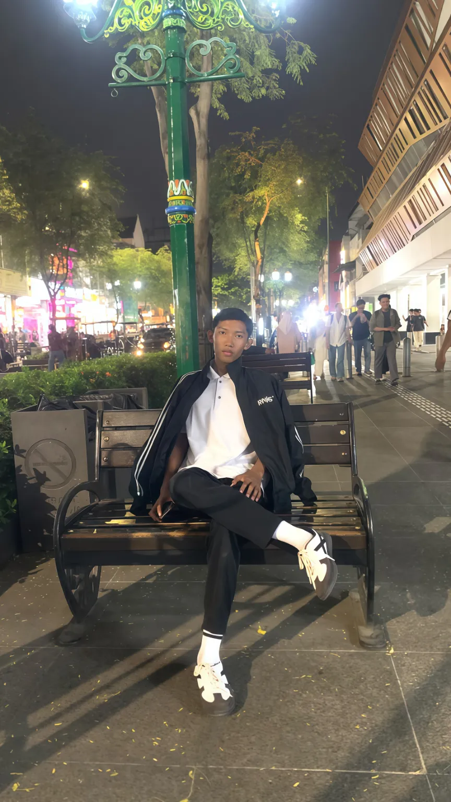

Entrepreneurship
Mempelajari dunia usaha, membangun bisnis, dan memahami cara mengembangkan ide menjadi peluang.
PERSONAL PORTFOLIO 2026
HALO, SAYA
Saya adalah pelajar jurusan Teknik Kendaraan Ringan yang tertarik mempelajari dunia usaha, bisnis, saham, dan pengembangan diri. Saya senang belajar hal baru dan terus mengembangkan kemampuan.


A LITTLESaya adalah pelajar SMK jurusan Teknik Kendaraan Ringan (TKR) yang memiliki ketertarikan pada dunia usaha, bisnis, dan investasi saham. Saya senang mempelajari hal-hal baru, mengembangkan wawasan, serta membangun kemampuan untuk meraih masa depan yang lebih baik.
Saya juga memiliki pengalaman menjalankan usaha jual beli akun game secara mandiri dan aktif mengikuti kegiatan organisasi sekolah.
Mari terhubung ↗Minat yang mendorong saya untuk terus mencari pengetahuan dan mengembangkan diri.
Mempelajari dunia usaha, membangun bisnis, dan memahami cara mengembangkan ide menjadi peluang.
Mengenal saham, pasar modal, dan konsep investasi sebagai bekal pengetahuan keuangan.
Belajar mengelola uang dan memahami dasar-dasar keuangan dengan bijak.
Meningkatkan kemampuan, pola pikir, dan kebiasaan positif melalui proses belajar.
PENGALAMAN MANDIRI · 4 TAHUN
Memiliki pengalaman selama 4 tahun dalam menjalankan usaha jual beli akun game secara mandiri melalui platform online. Bertanggung jawab dalam menawarkan akun, berkomunikasi dengan calon pembeli, serta mengelola proses transaksi.
Pengalaman ini menjadi langkah awal dalam mengenal dunia bisnis dan kewirausahaan. Saat ini kegiatan tersebut sudah tidak dijalankan lagi.
Berpartisipasi sebagai anggota OSIS di lingkungan sekolah serta mendapatkan pengalaman dalam kegiatan organisasi, komunikasi, dan kerja sama tim.
Berikut kemampuan yang saya kembangkan melalui pengalaman usaha, kegiatan sekolah, dan pembelajaran.
Jurusan Teknik Kendaraan Ringan (TKR) · Kelas XI
Saya sedang menyiapkan karya dan proyek untuk ditampilkan di sini. Nantikan pembaruan berikutnya!
PROJECTS IN PREPARATION · STAY TUNEDTerbuka untuk berkenalan, bertukar ide, dan berbagi pengalaman. Jangan ragu untuk menyapa.
Silakan hubungi saya melalui media sosial atau email.